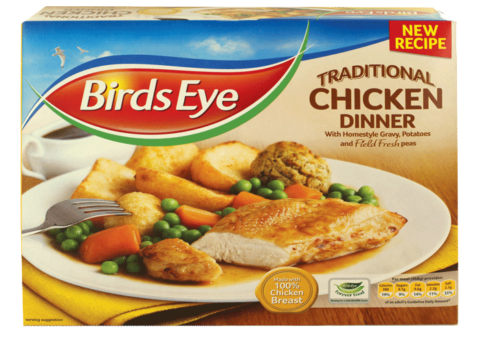
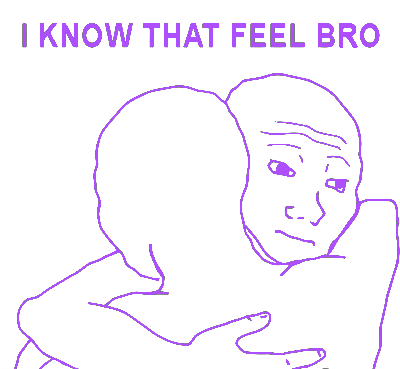

<link rel="import" href="/components/wasabi-player/wasabi-player.html">
<link rel="import" href="/components/wasabi-card/wasabi-card.html">

<polymer-element name="wasabi-game" attributes="game team">
    <template>

        <link rel="stylesheet" href="../../assets/css/main.css"/>

        <button class="white top-left-button" on-down="{{backToMenu}}">Back</button>

        <!-- Start game button -->
        <template if="{{game.state == 'PENDING'}}">
            <template if="{{game.players.length < 3}}">
                <p class="pre-game-message">Waiting for more players, you need at least 3...</p>
            </template>
            <template if="{{game.players.length >= 3 && game.creator == player}}">
                <button class="white top-right-button" type="button" on-down="{{triggerGameStart}}">Start game</button>
            </template>

            <template if="{{game.players.length >= 3 && game.creator != player}}">
                <p class="pre-game-message">Waiting for the creator of the game to start it</p>
            </template>
        </template>

        <template if="{{game.state == 'PLAYING'}}">
            <div class="game-board">
                <div class="game-status">
                    <div class="heart inline-block">{{game.lifePoints}}</div>
                    <div class="info inline-block">{{game.infoTokens}}</div>
                    <div class="deck inline-block">
                        <div class="card unknown-card">{{game.deckLeft}}</div>
                    </div>
                </div>

                <section class="played-cards card-section">
                    <template repeat="{{colours in game.played}}">
                        <div class="card-stack stack-{{colours.length}}-cards">
                            <template repeat="{{card in colours}}">
                                <wasabi-card colour="{{card.colour.className}}" number="{{card.number}}"></wasabi-card>
                            </template>
                        </div>
                    </template>
                </section>

                <template if="{{game.discarded.length}}">
                    <section class="discarded-cards card-section">
                        <div class="card-row">
                            <div class="card-row-inner">
                                <template repeat="{{card in game.discarded}}">
                                    <wasabi-card colour="{{card.colour.className}}" number="{{card.number}}"></wasabi-card>
                                </template>
                            </div>
                        </div>
                    </section>
                </template>

            </div>
        </template>


        <template if="{{game.state == 'PENDING' || game.state == 'PLAYING'}}" repeat="{{playerId in game.players}}">
            <wasabi-player
                playerId="{{playerId}}"
                focus="{{game.players[game.focus] == playerId}}"
                cards="{{game.hands[playerId].cards}}"
                picture="{{team[playerId].picture}}"
                name="{{team[playerId].name}}"
                owner="{{playerId == player}}"
                extraCard="{{game.maxCards > 4}}"
                on-play="{{playCard}}"
                on-discard="{{discardCard}}"
                state="{{game.state}}"
                on-give-info="{{giveInfo}}"
                canGiveInfo="{{player == game.players[game.focus] && game.infoTokens > 0}}"
                on-go-large="{{goLarge}}">
            </wasabi-player>
        </template>


        <template if="{{game.state == 'WON'}}">
            <p class="post-game-message">Winner winner</p>
            
        </template>

        <template if="{{game.state == 'LOST'}}">

            <template if="{{game.lifePoints == 0}}">
                <p class="post-game-message">You ran out of fuse Tokens cause you played bad cards. Try not doing that.</p>
            </template>
            <template if="{{game.lifePoints != 0}}">
                <p class="post-game-message">You lost cause you discarded or badly played stuff you need.</p>
            </template>
            <!-- <template if="{{game.gameEndCard != null}}">
                <p>Game ending card: </p>

                <wasabi-card colour="{{game.gameEndCard.colour.className}}" number="{{game.gameEndCard.number}}"></wasabi-card>
            </template> -->
            <template if="{{game.lastPlayerTurn != null && game.lastPlayerTurn == game.players[game.focus]}}">
                <p class="post-game-message">You took too much turns. Do it faster</p>
            </template>

            
        </template>

        <template if="{{game.messages.length}}">
            <section class="messages">
                <template if="{{game.state != 'PENDING'}}" repeat="{{message in game.messages}}">
                    <p class="chat-message">{{prettyDate(message.dateTime)}}: {{message.message}}</p>
                </template>
            </section>
        </template>

    </template>

    <script>

        Polymer('wasabi-game', {

            triggerGameStart: function () {
                this.fire('start-game', this.game.id);
            },

            discardCard: function (e) {
                this.fire('discard-card', {
                    cardIndex: e.detail.cardIndex,
                    playerId: e.detail.playerId,
                    gameId: this.game.id
                });
            },

            playCard: function (e) {
                this.fire('play-card', {
                    cardIndex: e.detail.cardIndex,
                    playerId: e.detail.playerId,
                    gameId: this.game.id
                });
            },

            giveInfo: function (e) {
                e.stopPropagation();
                this.fire('give-info', {
                    playerId: e.detail.playerId,
                    gameId: this.game.id,
                    type: e.detail.type,
                    value: e.detail.value
                });
            },


            goLarge: function (e) {
                e.stopPropagation();
                if (this.largePlayer) {
                    this.largePlayer.hideCard();
                }
                this.largePlayer = e.target;
            },
            prettyDate: function(time) {
                var date = new Date((time || "").replace(/-/g,"/").replace(/[TZ]/g," ")),
                    diff = (((new Date()).getTime() - date.getTime() + (date.getTimezoneOffset()*60000)) / 1000),
                    day_diff = Math.floor(diff / 86400);

                if ( isNaN(day_diff) || day_diff < 0 || day_diff >= 31 )
                    return;

                return day_diff == 0 && (
                        diff < 60 && "just now" ||
                        diff < 120 && "1 minute ago" ||
                        diff < 3600 && Math.floor( diff / 60 ) + " minutes ago" ||
                        diff < 7200 && "1 hour ago" ||
                        diff < 86400 && Math.floor( diff / 3600 ) + " hours ago") ||
                    day_diff == 1 && "Yesterday" ||
                    day_diff < 7 && day_diff + " days ago" ||
                    day_diff < 31 && Math.ceil( day_diff / 7 ) + " weeks ago";
            },

            backToMenu: function (e) {
                e.stopPropagation();
                this.fire('back-to-select');
            }

        });


    </script>
</polymer-element>